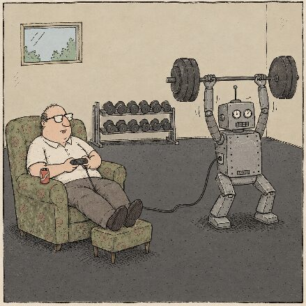

How I Use AI
Purpose and overview of this statement
This statement is about how I use AI as a teacher, not how students use it.
As AI has become integrated into my practice - not just an occasional add on - I aim to remain conscious of how I’m using it and why. Guiding this reflective approach are two questions:
- Is this improving student learning? The answer should be yes.
- Am I just doing this because I’m lazy? The answer should be no.
These questions help me to stay true to my guiding principle of AI use: using AI should make improve students’ engagement, content learning, and skills development.
Transparency is important. Even where I feel confident that AI use is improving student learning, I can feel as if I am deceiving students or ‘cheating’. By explaining my use openly, I want to protect my integrity as a teacher and the learning relationships I have with students.
This statement is entirely written by me, word for word. It seemed a step too far to get AI to write my statement about how I use AI!
"Do as I say, not as I do"
The elephant in the room here is that I use AI a lot while asking that students use is sparingly. I don’t see this as a contradiction. In common, students and I should be using AI to further our goals. I hope we also have in common a goal to improve learning, though I acknowledge that there may be times that what this means, and what work goes on to achieve this, can differ.
As a teacher, aiming to improve student learning means that I should be producing the best products that I can. This means providing high quality, customised learning activities, pacing, resources, information and feedback as I can to students.
For students, improving learning means going through a process. Just as when we go to the gym the point of lifting weights is to work our muscles instead of moving the weight, the point of writing an essay (or any other learning activity) is to learn, not to produce a perfect essay. There are cases where AI can help learning, but these times need to be carefully considered so as not to prevent productive struggle.

How I use AI
Co-creation, not abdication
I consider that what I create with AI is co-created. The process of using AI is very rarely one step request for it to make something. Instead, it generally involves:
- Discussion about what I want made
- Providing my own samples
- Assessing ideas or samples from the AI
- Getting the AI to change the content, emphasis or style of what it produces
- Getting the AI to produce what I want made, in whole or part
- Editing it directly myself.
This is an iterative process and involves a lot of revision until I am satisfied with the product.
The mix of myself and AI can have very blurry edges, so I do not cite exactly which of resources is AI-generated.
Use of Claude Projects
Almost all of my work is done using a Claude Project or Google Notebook for that subject or topic. Each project has access to some or all of:
- Resources I trust
- The course guide
- Sample assessments
- Subject/examiner reports
- My previously developed resources.
This means that work with the AI draws on curriculum-relevant information and frames information in a way that is relevant to the course.
Planning classes
Teaching for the past 18 years is a mixed blessing in planning. While I can quickly come up with lesson structures and activity ideas, there’s a risk that I get stale and fall back onto what comes easily to me.
And so, I talk with AIs to get ideas for class when I’m short on ideas, or where I think my ideas fall short of what I hope for for my students. I adjust the ideas given to me, ensuring they are aligned to the class’ outcomes and specific needs.
Generally, I get ideas for single activities rather than whole class lesson plans.
Making class websites
I have built course websites (IBEcon, IBBM) or internal assessment resource websites (Econia, Busia). The aim of these websites is to present information and learning activities from class in a far more accessible format than in messy slide decks with over 100 slides.
The process for making these websites is iterative, as described above. That is, I work with Claude, going back and forth, to change wording, sequencing and design.
I instruct Claude to find and fill in larger gaps in the syllabus and tag these as being AI generated. This draws on other resources I have provided, so hallucinations have been very rare.
I aim to review everything.
Slides and presentations
Some slides are generated using AI. Some classes’ slides will be entirely written by me, while others will be a mix of AI and my own creation.
Making slides is not a matter of asking an AI to make slides around a topic. Instead, it generally involves going back and forth to determine the ILOs, the depth of content, activity ideas and style. I check what is created using my own knowledge and authoritative, trustworthy sources.
Resource creation
I co-create worksheets, case studies, questions and assessment design with AI. Without AI, I would either create resources from scratch or photocopy resources from textbooks. Co-creating with AI allows resources to be better aligned with the curriculum and better thought through given the deadlines I often work with. Compared to textbooks or standardised resource packs, these resources can be far better customised to the needs of the class, or of individual students in the class.
Classroom tool production
I have built multiple tools for my classroom - found through my website unisam.nz - for use in the classroom. These streamline activities we’d otherwise do, allow getting information quickly from students as a way to ground my teaching or discussion, or just add fun.
Where there are student logins required, I follow school policy.
For tools that have no login but where students enter information, I ensure use of the tool does not connect data to student identity.
Checking my work
For all of the resource types above, I check everything before students see it. If a resource cannot be checked, I flag it as being AI generated and subject to review.
With this said, I am aware that text that is written confidently and that is plausible can be genuinely hard for a human brain to error check. However, teachers - including me! - have long made mistakes and said things that are wrong; I believe that I am more factually accurate with AI in my workflow than without.
Feedback and communication
Feedback and marking
Marks are always decided by me, not AI. I never report a mark that is given by AI.
Feedback is sometimes assisted by AI. So far, I am finding that this takes as long as non-assisted feedback, but it gives feedback that is more comprehensive and actionable for students.
Often I will talk into an AI on my phone as I read student work, making notes about what I am noticing. I will then have it regenerate that into, for example, a ‘start, stop, continue’ format. I read this to ensure that it is what I intend to say, and recraft it where necessary.
Sometimes, I will get an AI conversation to give feedback on student work after I have read it and formed my own view on the work. In such a conversation, I will provide benchmarks, rubrics, the task, and all within that subject’s project. The AI’s feedback often tells me things that I had missed, and help me to give quality feedback to students.
Communication with students and parents
When I write to students or parents, I do so in my own voice.
(The exception is some feedback, as described above.)
Data protection
Student names sometimes go into Gemini - for which my school has an education package - for administrative purposes, for example ordering or comparing lists. Even on Gemini, I do not attach student names to their work. Beyond student work, I never put anything that might be considered personal about a student into Gemini or any other AI.
Student names or information about them never enter any other AI.
My use of AI is in line with school policy and the laws of the country I am working in.
My learning
Reviewing and researching content
While I am qualified and experienced in the areas that I teach, I check and refresh my knowledge before teaching.
I find Google Notebook particularly useful for this as I can create summaries from multiple reliable resources, including ebooks. This broadens my perspectives beyond the few sources I would have time to read before teaching a particular topic. Notebook also cites its sources and makes it easy to check that what it says is the same as what is written in the text.
Is AI rotting my brain?
I sometimes wonder if AI is making me less sharp. In many respects, I feel more in touch with the content of my subjects and able to creatively process it into useful learning for students than I ever have. I’m learning more new information with the help of Google Notebook and I’m reading as many books as I ever did.
At the same time, the boundaries between offloading the grunt work of making resources and offloading actual thinking is blurry. Some of my skills are calcifying, and I hope these are just grunt work skills, but I am cautious about what I don’t notice diminishing.
I try to build some safeguards into this. Writing feedback myself before getting AI input is partly an act of integrity to my students, but it’s also a decision to continue exercising my ability to analyse and assess student learning. That is, I'm lifting the weights in the gym, not just getting them moved for me. As time goes on, it will be tempting to offload more and more, but taking a concrete position in not using AI would take away the many benefits I find it offers in teaching and learning.
What’s left when AI is better than me?
Over the past four years of using AI, I’ve seen the huge progress it has made. Even six months ago, feedback was often inaccurate, and I found myself disagreeing with it as often as not. Now, it is consistently perceptive, accurate and comprehensive. Backed by the right sources and prompts, it is, frankly, often better than me. This is similar in other areas of teaching and learning.
So what will be left for me to offer to students?
I am becoming increasingly comfortable that AI will be able to better process the vast amounts of data that I always wanted to process to better help students learn, and will be able to offer more targeted practice for students’ individual needs. Where raw knowledge and skills acquisition is all that is considered, I almost hope that I’m redundant soon, because a mere human brain simply cannot process the states of learning of over 100 students and respond to them with optimised next steps.
But school has to be more than optimised learning of knowledge and skills. In fact, as I see AI catching up and overtaking my knowledge and skills in some aspects of teaching, so it will in most other professions; and thus the status of knowledge and skills as outcomes of education may reduce. Schools need to be a place where we are human and develop our humanity. Places where we learn together, be together, wonder, take clumsy steps, take risks, fail, figure out what to persevere with and what to give up. These are fundamentally human activities. My hope is that as a teacher with a few decades until retirement, co-working with AI will give me more space to work human-to-human with my students.